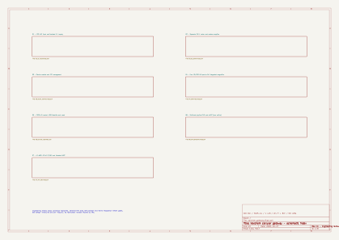

01 - 120 VAC input and isolated 5 V supply
Open full-resolution SVG
120 VAC · four Ethernet LAN ports · EG25-GL · physical SIM / eUICC · Wi-Fi + Bluetooth retained · no LoRa



| reference | pin | pin_name | net | source |
|---|---|---|---|---|
| J1 | 1 | Pin_1 | AC_L_IN | KiCad 9.0.7 Connector_Generic:Conn_01x03; manufacturer cross-check as documented |
| J1 | 2 | Pin_2 | AC_N | KiCad 9.0.7 Connector_Generic:Conn_01x03; manufacturer cross-check as documented |
| J1 | 3 | Pin_3 | CHASSIS_PE | KiCad 9.0.7 Connector_Generic:Conn_01x03; manufacturer cross-check as documented |
| F1 | 1 | ~ | AC_L_IN | KiCad 9.0.7 Device:Fuse; manufacturer cross-check as documented |
| F1 | 2 | ~ | AC_L_FUSED | KiCad 9.0.7 Device:Fuse; manufacturer cross-check as documented |
| PS1 | 1 | AC/L | AC_L_FUSED | KiCad 9.0.7 Converter_ACDC:IRM-20-5; manufacturer cross-check as documented |
| PS1 | 2 | AC/N | AC_N | KiCad 9.0.7 Converter_ACDC:IRM-20-5; manufacturer cross-check as documented |
| PS1 | 4 | +Vo | 5V_ISO | KiCad 9.0.7 Converter_ACDC:IRM-20-5; manufacturer cross-check as documented |
| PS1 | 3 | -Vo | GND_ISO | KiCad 9.0.7 Converter_ACDC:IRM-20-5; manufacturer cross-check as documented |
| C1 | 1 | ~ | 5V_ISO | KiCad 9.0.7 Device:C; manufacturer cross-check as documented |
| C1 | 2 | ~ | GND_ISO | KiCad 9.0.7 Device:C; manufacturer cross-check as documented |
| C2 | 1 | ~ | 5V_ISO | KiCad 9.0.7 Device:C; manufacturer cross-check as documented |
| C2 | 2 | ~ | GND_ISO | KiCad 9.0.7 Device:C; manufacturer cross-check as documented |
| #FLG01 | 1 | ~ | AC_L_FUSED | KiCad 9.0.7 power:PWR_FLAG; manufacturer cross-check as documented |
| #FLG02 | 1 | ~ | AC_N | KiCad 9.0.7 power:PWR_FLAG; manufacturer cross-check as documented |
| #FLG03 | 1 | ~ | CHASSIS_PE | KiCad 9.0.7 power:PWR_FLAG; manufacturer cross-check as documented |
| U2 | 13 | EN | 5V_ISO | KiCad 9.0.7 Regulator_Switching:TPS62132; manufacturer cross-check as documented |
| U2 | 9 | SS/TR | R_SS | KiCad 9.0.7 Regulator_Switching:TPS62132; manufacturer cross-check as documented |
| U2 | 8 | DEF | GND_ISO | KiCad 9.0.7 Regulator_Switching:TPS62132; manufacturer cross-check as documented |
| U2 | 7 | FSW | GND_ISO | KiCad 9.0.7 Regulator_Switching:TPS62132; manufacturer cross-check as documented |
| U2 | 10 | VIN | 5V_ISO | KiCad 9.0.7 Regulator_Switching:TPS62132; manufacturer cross-check as documented |
| U2 | 11 | VIN | 5V_ISO | KiCad 9.0.7 Regulator_Switching:TPS62132; manufacturer cross-check as documented |
| U2 | 12 | VIN | 5V_ISO | KiCad 9.0.7 Regulator_Switching:TPS62132; manufacturer cross-check as documented |
| U2 | 15 | GND | GND_ISO | KiCad 9.0.7 Regulator_Switching:TPS62132; manufacturer cross-check as documented |
| U2 | 16 | GND | GND_ISO | KiCad 9.0.7 Regulator_Switching:TPS62132; manufacturer cross-check as documented |
| U2 | 17 | GND | GND_ISO | KiCad 9.0.7 Regulator_Switching:TPS62132; manufacturer cross-check as documented |
| U2 | 6 | GND | GND_ISO | KiCad 9.0.7 Regulator_Switching:TPS62132; manufacturer cross-check as documented |
| U2 | 1 | SW | R_SW | KiCad 9.0.7 Regulator_Switching:TPS62132; manufacturer cross-check as documented |
| U2 | 2 | SW | R_SW | KiCad 9.0.7 Regulator_Switching:TPS62132; manufacturer cross-check as documented |
| U2 | 3 | SW | R_SW | KiCad 9.0.7 Regulator_Switching:TPS62132; manufacturer cross-check as documented |
| U2 | 14 | VOS | 3V3_ROUTER | KiCad 9.0.7 Regulator_Switching:TPS62132; manufacturer cross-check as documented |
| U2 | 4 | PG | NC | KiCad 9.0.7 Regulator_Switching:TPS62132; manufacturer cross-check as documented |
| U2 | 5 | FB | GND_ISO | KiCad 9.0.7 Regulator_Switching:TPS62132; manufacturer cross-check as documented |
| L1 | 1 | 1 | R_SW | KiCad 9.0.7 Device:L; manufacturer cross-check as documented |
| L1 | 2 | 2 | 3V3_ROUTER | KiCad 9.0.7 Device:L; manufacturer cross-check as documented |
| C10 | 1 | ~ | 5V_ISO | KiCad 9.0.7 Device:C; manufacturer cross-check as documented |
| C10 | 2 | ~ | GND_ISO | KiCad 9.0.7 Device:C; manufacturer cross-check as documented |
| C11 | 1 | ~ | 5V_ISO | KiCad 9.0.7 Device:C; manufacturer cross-check as documented |
| C11 | 2 | ~ | GND_ISO | KiCad 9.0.7 Device:C; manufacturer cross-check as documented |
| C12 | 1 | ~ | R_SS | KiCad 9.0.7 Device:C; manufacturer cross-check as documented |
| C12 | 2 | ~ | GND_ISO | KiCad 9.0.7 Device:C; manufacturer cross-check as documented |
| C13 | 1 | ~ | 3V3_ROUTER | KiCad 9.0.7 Device:C; manufacturer cross-check as documented |
| C13 | 2 | ~ | GND_ISO | KiCad 9.0.7 Device:C; manufacturer cross-check as documented |
| #FLG04 | 1 | ~ | 3V3_ROUTER | KiCad 9.0.7 power:PWR_FLAG; manufacturer cross-check as documented |
| U3 | 13 | EN | MODEM_BUCK_EN | KiCad 9.0.7 Regulator_Switching:TPS62132; manufacturer cross-check as documented |
| U3 | 9 | SS/TR | M_SS | KiCad 9.0.7 Regulator_Switching:TPS62132; manufacturer cross-check as documented |
| U3 | 8 | DEF | GND_ISO | KiCad 9.0.7 Regulator_Switching:TPS62132; manufacturer cross-check as documented |
| U3 | 7 | FSW | GND_ISO | KiCad 9.0.7 Regulator_Switching:TPS62132; manufacturer cross-check as documented |
| U3 | 10 | VIN | 5V_ISO | KiCad 9.0.7 Regulator_Switching:TPS62132; manufacturer cross-check as documented |
| U3 | 11 | VIN | 5V_ISO | KiCad 9.0.7 Regulator_Switching:TPS62132; manufacturer cross-check as documented |
| U3 | 12 | VIN | 5V_ISO | KiCad 9.0.7 Regulator_Switching:TPS62132; manufacturer cross-check as documented |
| U3 | 15 | GND | GND_ISO | KiCad 9.0.7 Regulator_Switching:TPS62132; manufacturer cross-check as documented |
| U3 | 16 | GND | GND_ISO | KiCad 9.0.7 Regulator_Switching:TPS62132; manufacturer cross-check as documented |
| U3 | 17 | GND | GND_ISO | KiCad 9.0.7 Regulator_Switching:TPS62132; manufacturer cross-check as documented |
| U3 | 6 | GND | GND_ISO | KiCad 9.0.7 Regulator_Switching:TPS62132; manufacturer cross-check as documented |
| U3 | 1 | SW | M_SW | KiCad 9.0.7 Regulator_Switching:TPS62132; manufacturer cross-check as documented |
| U3 | 2 | SW | M_SW | KiCad 9.0.7 Regulator_Switching:TPS62132; manufacturer cross-check as documented |
| U3 | 3 | SW | M_SW | KiCad 9.0.7 Regulator_Switching:TPS62132; manufacturer cross-check as documented |
| U3 | 14 | VOS | 3V3_MODEM | KiCad 9.0.7 Regulator_Switching:TPS62132; manufacturer cross-check as documented |
| U3 | 4 | PG | NC | KiCad 9.0.7 Regulator_Switching:TPS62132; manufacturer cross-check as documented |
| U3 | 5 | FB | GND_ISO | KiCad 9.0.7 Regulator_Switching:TPS62132; manufacturer cross-check as documented |
| L2 | 1 | 1 | M_SW | KiCad 9.0.7 Device:L; manufacturer cross-check as documented |
| L2 | 2 | 2 | 3V3_MODEM | KiCad 9.0.7 Device:L; manufacturer cross-check as documented |
| C20 | 1 | ~ | 5V_ISO | KiCad 9.0.7 Device:C; manufacturer cross-check as documented |
| C20 | 2 | ~ | GND_ISO | KiCad 9.0.7 Device:C; manufacturer cross-check as documented |
| C21 | 1 | ~ | 5V_ISO | KiCad 9.0.7 Device:C; manufacturer cross-check as documented |
| C21 | 2 | ~ | GND_ISO | KiCad 9.0.7 Device:C; manufacturer cross-check as documented |
| C22 | 1 | ~ | M_SS | KiCad 9.0.7 Device:C; manufacturer cross-check as documented |
| C22 | 2 | ~ | GND_ISO | KiCad 9.0.7 Device:C; manufacturer cross-check as documented |
| C23 | 1 | ~ | 3V3_MODEM | KiCad 9.0.7 Device:C; manufacturer cross-check as documented |
| C23 | 2 | ~ | GND_ISO | KiCad 9.0.7 Device:C; manufacturer cross-check as documented |
| C24 | 1 | ~ | 3V3_MODEM | KiCad 9.0.7 Device:C; manufacturer cross-check as documented |
| C24 | 2 | ~ | GND_ISO | KiCad 9.0.7 Device:C; manufacturer cross-check as documented |
| C25 | 1 | ~ | 3V3_MODEM | KiCad 9.0.7 Device:C; manufacturer cross-check as documented |
| C25 | 2 | ~ | GND_ISO | KiCad 9.0.7 Device:C; manufacturer cross-check as documented |
| R20 | 1 | ~ | 5V_ISO | KiCad 9.0.7 Device:R; manufacturer cross-check as documented |
| R20 | 2 | ~ | MODEM_BUCK_EN | KiCad 9.0.7 Device:R; manufacturer cross-check as documented |
| Q1 | 1 | G | MODEM_OFF_GATE | KiCad 9.0.7 Transistor_FET:2N7002; manufacturer cross-check as documented |
| Q1 | 3 | D | MODEM_BUCK_EN | KiCad 9.0.7 Transistor_FET:2N7002; manufacturer cross-check as documented |
| Q1 | 2 | S | GND_ISO | KiCad 9.0.7 Transistor_FET:2N7002; manufacturer cross-check as documented |
| R21 | 1 | ~ | MODEM_OFF | KiCad 9.0.7 Device:R; manufacturer cross-check as documented |
| R21 | 2 | ~ | MODEM_OFF_GATE | KiCad 9.0.7 Device:R; manufacturer cross-check as documented |
| R22 | 1 | ~ | MODEM_OFF_GATE | KiCad 9.0.7 Device:R; manufacturer cross-check as documented |
| R22 | 2 | ~ | GND_ISO | KiCad 9.0.7 Device:R; manufacturer cross-check as documented |
| #FLG05 | 1 | ~ | 3V3_MODEM | KiCad 9.0.7 power:PWR_FLAG; manufacturer cross-check as documented |
| U1 | 1 | GND | GND_ISO | Hi-Link hardware manual PDF pp.11-13 and 16-17; physical 1-56 plus design-named unnumbered EP1-EP3 ground lands |
| U1 | 2 | 3V3 | 3V3_ROUTER | Hi-Link hardware manual PDF pp.11-13 and 16-17; physical 1-56 plus design-named unnumbered EP1-EP3 ground lands |
| U1 | 3 | 3V3 | 3V3_ROUTER | Hi-Link hardware manual PDF pp.11-13 and 16-17; physical 1-56 plus design-named unnumbered EP1-EP3 ground lands |
| U1 | 4 | GND | GND_ISO | Hi-Link hardware manual PDF pp.11-13 and 16-17; physical 1-56 plus design-named unnumbered EP1-EP3 ground lands |
| U1 | 5 | SPI_CS0 | NC | Hi-Link hardware manual PDF pp.11-13 and 16-17; physical 1-56 plus design-named unnumbered EP1-EP3 ground lands |
| U1 | 6 | REF_CLK0 | NC | Hi-Link hardware manual PDF pp.11-13 and 16-17; physical 1-56 plus design-named unnumbered EP1-EP3 ground lands |
| U1 | 7 | PERST_N | NC | Hi-Link hardware manual PDF pp.11-13 and 16-17; physical 1-56 plus design-named unnumbered EP1-EP3 ground lands |
| U1 | 8 | WDT_RST_N | NC | Hi-Link hardware manual PDF pp.11-13 and 16-17; physical 1-56 plus design-named unnumbered EP1-EP3 ground lands |
| U1 | 9 | EPHY_LED4 | LAN4_LED_N | Hi-Link hardware manual PDF pp.11-13 and 16-17; physical 1-56 plus design-named unnumbered EP1-EP3 ground lands |
| U1 | 10 | EPHY_LED3 | LAN3_LED_N | Hi-Link hardware manual PDF pp.11-13 and 16-17; physical 1-56 plus design-named unnumbered EP1-EP3 ground lands |
| U1 | 11 | EPHY_LED2 | LAN2_LED_N | Hi-Link hardware manual PDF pp.11-13 and 16-17; physical 1-56 plus design-named unnumbered EP1-EP3 ground lands |
| U1 | 12 | EPHY_LED1 | LAN1_LED_N | Hi-Link hardware manual PDF pp.11-13 and 16-17; physical 1-56 plus design-named unnumbered EP1-EP3 ground lands |
| U1 | 13 | EPHY_LED0 | NC | Hi-Link hardware manual PDF pp.11-13 and 16-17; physical 1-56 plus design-named unnumbered EP1-EP3 ground lands |
| U1 | 14 | PORST_N | ROUTER_RESET_N | Hi-Link hardware manual PDF pp.11-13 and 16-17; physical 1-56 plus design-named unnumbered EP1-EP3 ground lands |
| U1 | 15 | UART_TXD1 | UART1_HOST_TX | Hi-Link hardware manual PDF pp.11-13 and 16-17; physical 1-56 plus design-named unnumbered EP1-EP3 ground lands |
| U1 | 16 | UART_RXD1 | UART1_HOST_RX | Hi-Link hardware manual PDF pp.11-13 and 16-17; physical 1-56 plus design-named unnumbered EP1-EP3 ground lands |
| U1 | 17 | I2S_SDI | NC | Hi-Link hardware manual PDF pp.11-13 and 16-17; physical 1-56 plus design-named unnumbered EP1-EP3 ground lands |
| U1 | 18 | I2S_SDO | NC | Hi-Link hardware manual PDF pp.11-13 and 16-17; physical 1-56 plus design-named unnumbered EP1-EP3 ground lands |
| U1 | 19 | I2S_WS | NC | Hi-Link hardware manual PDF pp.11-13 and 16-17; physical 1-56 plus design-named unnumbered EP1-EP3 ground lands |
| U1 | 20 | I2S_CLK | NC | Hi-Link hardware manual PDF pp.11-13 and 16-17; physical 1-56 plus design-named unnumbered EP1-EP3 ground lands |
| U1 | 21 | GND | GND_ISO | Hi-Link hardware manual PDF pp.11-13 and 16-17; physical 1-56 plus design-named unnumbered EP1-EP3 ground lands |
| U1 | 22 | ANT_UNLINKED | NC | Hi-Link hardware manual PDF pp.11-13 and 16-17; physical 1-56 plus design-named unnumbered EP1-EP3 ground lands |
| U1 | 23 | GND | GND_ISO | Hi-Link hardware manual PDF pp.11-13 and 16-17; physical 1-56 plus design-named unnumbered EP1-EP3 ground lands |
| U1 | 24 | I2C_SCLK | I2C_SCL | Hi-Link hardware manual PDF pp.11-13 and 16-17; physical 1-56 plus design-named unnumbered EP1-EP3 ground lands |
| U1 | 25 | I2C_SD | I2C_SDA | Hi-Link hardware manual PDF pp.11-13 and 16-17; physical 1-56 plus design-named unnumbered EP1-EP3 ground lands |
| U1 | 26 | SPI_CS1 | NC | Hi-Link hardware manual PDF pp.11-13 and 16-17; physical 1-56 plus design-named unnumbered EP1-EP3 ground lands |
| U1 | 27 | SPI_CLK | NC | Hi-Link hardware manual PDF pp.11-13 and 16-17; physical 1-56 plus design-named unnumbered EP1-EP3 ground lands |
| U1 | 28 | SPI_MISO | NC | Hi-Link hardware manual PDF pp.11-13 and 16-17; physical 1-56 plus design-named unnumbered EP1-EP3 ground lands |
| U1 | EP1 | THERMAL_GND | GND_ISO | Hi-Link hardware manual PDF pp.11-13 and 16-17; physical 1-56 plus design-named unnumbered EP1-EP3 ground lands |
| U1 | EP2 | THERMAL_GND | GND_ISO | Hi-Link hardware manual PDF pp.11-13 and 16-17; physical 1-56 plus design-named unnumbered EP1-EP3 ground lands |
| U1 | EP3 | THERMAL_GND | GND_ISO | Hi-Link hardware manual PDF pp.11-13 and 16-17; physical 1-56 plus design-named unnumbered EP1-EP3 ground lands |
| U1 | 29 | SPI_MOSI | NC | Hi-Link hardware manual PDF pp.11-13 and 16-17; physical 1-56 plus design-named unnumbered EP1-EP3 ground lands |
| U1 | 30 | GPIO0 | NC | Hi-Link hardware manual PDF pp.11-13 and 16-17; physical 1-56 plus design-named unnumbered EP1-EP3 ground lands |
| U1 | 31 | UART_TXD0 | CONSOLE_TX | Hi-Link hardware manual PDF pp.11-13 and 16-17; physical 1-56 plus design-named unnumbered EP1-EP3 ground lands |
| U1 | 32 | UART_RXD0 | CONSOLE_RX | Hi-Link hardware manual PDF pp.11-13 and 16-17; physical 1-56 plus design-named unnumbered EP1-EP3 ground lands |
| U1 | 33 | WLED_N | NC | Hi-Link hardware manual PDF pp.11-13 and 16-17; physical 1-56 plus design-named unnumbered EP1-EP3 ground lands |
| U1 | 34 | MDI_RP_P0 | NC | Hi-Link hardware manual PDF pp.11-13 and 16-17; physical 1-56 plus design-named unnumbered EP1-EP3 ground lands |
| U1 | 35 | MDI_RN_P0 | NC | Hi-Link hardware manual PDF pp.11-13 and 16-17; physical 1-56 plus design-named unnumbered EP1-EP3 ground lands |
| U1 | 36 | MDI_TP_P0 | NC | Hi-Link hardware manual PDF pp.11-13 and 16-17; physical 1-56 plus design-named unnumbered EP1-EP3 ground lands |
| U1 | 37 | MDI_TN_P0 | NC | Hi-Link hardware manual PDF pp.11-13 and 16-17; physical 1-56 plus design-named unnumbered EP1-EP3 ground lands |
| U1 | 38 | MDI_TP_P1 | LAN1_TXP | Hi-Link hardware manual PDF pp.11-13 and 16-17; physical 1-56 plus design-named unnumbered EP1-EP3 ground lands |
| U1 | 39 | MDI_TN_P1 | LAN1_TXN | Hi-Link hardware manual PDF pp.11-13 and 16-17; physical 1-56 plus design-named unnumbered EP1-EP3 ground lands |
| U1 | 40 | MDI_RP_P1 | LAN1_RXP | Hi-Link hardware manual PDF pp.11-13 and 16-17; physical 1-56 plus design-named unnumbered EP1-EP3 ground lands |
| U1 | 41 | MDI_RN_P1 | LAN1_RXN | Hi-Link hardware manual PDF pp.11-13 and 16-17; physical 1-56 plus design-named unnumbered EP1-EP3 ground lands |
| U1 | 42 | MDI_RP_P2 | LAN2_RXP | Hi-Link hardware manual PDF pp.11-13 and 16-17; physical 1-56 plus design-named unnumbered EP1-EP3 ground lands |
| U1 | 43 | MDI_RN_P2 | LAN2_RXN | Hi-Link hardware manual PDF pp.11-13 and 16-17; physical 1-56 plus design-named unnumbered EP1-EP3 ground lands |
| U1 | 44 | MDI_TP_P2 | LAN2_TXP | Hi-Link hardware manual PDF pp.11-13 and 16-17; physical 1-56 plus design-named unnumbered EP1-EP3 ground lands |
| U1 | 45 | MDI_TN_P2 | LAN2_TXN | Hi-Link hardware manual PDF pp.11-13 and 16-17; physical 1-56 plus design-named unnumbered EP1-EP3 ground lands |
| U1 | 46 | MDI_TP_P3 | LAN3_TXP | Hi-Link hardware manual PDF pp.11-13 and 16-17; physical 1-56 plus design-named unnumbered EP1-EP3 ground lands |
| U1 | 47 | MDI_TN_P3 | LAN3_TXN | Hi-Link hardware manual PDF pp.11-13 and 16-17; physical 1-56 plus design-named unnumbered EP1-EP3 ground lands |
| U1 | 48 | MDI_RP_P3 | LAN3_RXP | Hi-Link hardware manual PDF pp.11-13 and 16-17; physical 1-56 plus design-named unnumbered EP1-EP3 ground lands |
| U1 | 49 | MDI_RN_P3 | LAN3_RXN | Hi-Link hardware manual PDF pp.11-13 and 16-17; physical 1-56 plus design-named unnumbered EP1-EP3 ground lands |
| U1 | 50 | MDI_RP_P4 | LAN4_RXP | Hi-Link hardware manual PDF pp.11-13 and 16-17; physical 1-56 plus design-named unnumbered EP1-EP3 ground lands |
| U1 | 51 | MDI_RN_P4 | LAN4_RXN | Hi-Link hardware manual PDF pp.11-13 and 16-17; physical 1-56 plus design-named unnumbered EP1-EP3 ground lands |
| U1 | 52 | MDI_TP_P4 | LAN4_TXP | Hi-Link hardware manual PDF pp.11-13 and 16-17; physical 1-56 plus design-named unnumbered EP1-EP3 ground lands |
| U1 | 53 | MDI_TN_P4 | LAN4_TXN | Hi-Link hardware manual PDF pp.11-13 and 16-17; physical 1-56 plus design-named unnumbered EP1-EP3 ground lands |
| U1 | 54 | USB_DP | USB_HOST_DP | Hi-Link hardware manual PDF pp.11-13 and 16-17; physical 1-56 plus design-named unnumbered EP1-EP3 ground lands |
| U1 | 55 | USB_DM | USB_HOST_DM | Hi-Link hardware manual PDF pp.11-13 and 16-17; physical 1-56 plus design-named unnumbered EP1-EP3 ground lands |
| U1 | 56 | GND | GND_ISO | Hi-Link hardware manual PDF pp.11-13 and 16-17; physical 1-56 plus design-named unnumbered EP1-EP3 ground lands |
| U6 | 6 | ~{RESET} | ROUTER_RESET_N | KiCad 9.0.7 Interface_Expansion:MCP23008-xSO; manufacturer cross-check as documented |
| U6 | 1 | SCL | I2C_SCL | KiCad 9.0.7 Interface_Expansion:MCP23008-xSO; manufacturer cross-check as documented |
| U6 | 2 | SDA | I2C_SDA | KiCad 9.0.7 Interface_Expansion:MCP23008-xSO; manufacturer cross-check as documented |
| U6 | 8 | INT | NC | KiCad 9.0.7 Interface_Expansion:MCP23008-xSO; manufacturer cross-check as documented |
| U6 | 3 | A2 | GND_ISO | KiCad 9.0.7 Interface_Expansion:MCP23008-xSO; manufacturer cross-check as documented |
| U6 | 4 | A1 | GND_ISO | KiCad 9.0.7 Interface_Expansion:MCP23008-xSO; manufacturer cross-check as documented |
| U6 | 5 | A0 | GND_ISO | KiCad 9.0.7 Interface_Expansion:MCP23008-xSO; manufacturer cross-check as documented |
| U6 | 7 | NC | NC | KiCad 9.0.7 Interface_Expansion:MCP23008-xSO; manufacturer cross-check as documented |
| U6 | 18 | VDD | 3V3_ROUTER | KiCad 9.0.7 Interface_Expansion:MCP23008-xSO; manufacturer cross-check as documented |
| U6 | 9 | VSS | GND_ISO | KiCad 9.0.7 Interface_Expansion:MCP23008-xSO; manufacturer cross-check as documented |
| U6 | 10 | GP0 | SIM_SELECT | KiCad 9.0.7 Interface_Expansion:MCP23008-xSO; manufacturer cross-check as documented |
| U6 | 11 | GP1 | MODEM_OFF | KiCad 9.0.7 Interface_Expansion:MCP23008-xSO; manufacturer cross-check as documented |
| U6 | 12 | GP2 | MODEM_RESET_REQ | KiCad 9.0.7 Interface_Expansion:MCP23008-xSO; manufacturer cross-check as documented |
| U6 | 13 | GP3 | WIFI_AUX_EN | KiCad 9.0.7 Interface_Expansion:MCP23008-xSO; manufacturer cross-check as documented |
| U6 | 14 | GP4 | WIFI_BUF_DISABLE | KiCad 9.0.7 Interface_Expansion:MCP23008-xSO; manufacturer cross-check as documented |
| U6 | 15 | GP5 | NC | KiCad 9.0.7 Interface_Expansion:MCP23008-xSO; manufacturer cross-check as documented |
| U6 | 16 | GP6 | NC | KiCad 9.0.7 Interface_Expansion:MCP23008-xSO; manufacturer cross-check as documented |
| U6 | 17 | GP7 | NC | KiCad 9.0.7 Interface_Expansion:MCP23008-xSO; manufacturer cross-check as documented |
| R30 | 1 | ~ | 3V3_ROUTER | KiCad 9.0.7 Device:R; manufacturer cross-check as documented |
| R30 | 2 | ~ | I2C_SCL | KiCad 9.0.7 Device:R; manufacturer cross-check as documented |
| R31 | 1 | ~ | 3V3_ROUTER | KiCad 9.0.7 Device:R; manufacturer cross-check as documented |
| R31 | 2 | ~ | I2C_SDA | KiCad 9.0.7 Device:R; manufacturer cross-check as documented |
| R32 | 1 | ~ | SIM_SELECT | KiCad 9.0.7 Device:R; manufacturer cross-check as documented |
| R32 | 2 | ~ | GND_ISO | KiCad 9.0.7 Device:R; manufacturer cross-check as documented |
| R33 | 1 | ~ | MODEM_OFF | KiCad 9.0.7 Device:R; manufacturer cross-check as documented |
| R33 | 2 | ~ | GND_ISO | KiCad 9.0.7 Device:R; manufacturer cross-check as documented |
| R34 | 1 | ~ | WIFI_AUX_EN | KiCad 9.0.7 Device:R; manufacturer cross-check as documented |
| R34 | 2 | ~ | GND_ISO | KiCad 9.0.7 Device:R; manufacturer cross-check as documented |
| R35 | 1 | ~ | MODEM_RESET_REQ | KiCad 9.0.7 Device:R; manufacturer cross-check as documented |
| R35 | 2 | ~ | GND_ISO | KiCad 9.0.7 Device:R; manufacturer cross-check as documented |
| C30 | 1 | ~ | 3V3_ROUTER | KiCad 9.0.7 Device:C; manufacturer cross-check as documented |
| C30 | 2 | ~ | GND_ISO | KiCad 9.0.7 Device:C; manufacturer cross-check as documented |
| C31 | 1 | ~ | 3V3_ROUTER | KiCad 9.0.7 Device:C; manufacturer cross-check as documented |
| C31 | 2 | ~ | GND_ISO | KiCad 9.0.7 Device:C; manufacturer cross-check as documented |
| SW1 | 1 | 1 | ROUTER_RESET_N | KiCad 9.0.7 Switch:SW_Push; manufacturer cross-check as documented |
| SW1 | 2 | 2 | GND_ISO | KiCad 9.0.7 Switch:SW_Push; manufacturer cross-check as documented |
| J7 | 1 | Pin_1 | GND_ISO | KiCad 9.0.7 Connector_Generic:Conn_01x03; manufacturer cross-check as documented |
| J7 | 2 | Pin_2 | CONSOLE_TX | KiCad 9.0.7 Connector_Generic:Conn_01x03; manufacturer cross-check as documented |
| J7 | 3 | Pin_3 | CONSOLE_RX | KiCad 9.0.7 Connector_Generic:Conn_01x03; manufacturer cross-check as documented |
| J2 | 1 | RD_PLUS | LAN1_RXP | Wurth 7499010121A rev003.001 p.2; RX/TX names corrected against vendor, not old KiCad symbol |
| J2 | 2 | RX_CT | LAN1_RX_CT | Wurth 7499010121A rev003.001 p.2; RX/TX names corrected against vendor, not old KiCad symbol |
| J2 | 3 | RD_MINUS | LAN1_RXN | Wurth 7499010121A rev003.001 p.2; RX/TX names corrected against vendor, not old KiCad symbol |
| J2 | 4 | TD_PLUS | LAN1_TXP | Wurth 7499010121A rev003.001 p.2; RX/TX names corrected against vendor, not old KiCad symbol |
| J2 | 5 | TX_CT | LAN1_TX_CT | Wurth 7499010121A rev003.001 p.2; RX/TX names corrected against vendor, not old KiCad symbol |
| J2 | 6 | TD_MINUS | LAN1_TXN | Wurth 7499010121A rev003.001 p.2; RX/TX names corrected against vendor, not old KiCad symbol |
| J2 | 7 | NC | NC | Wurth 7499010121A rev003.001 p.2; RX/TX names corrected against vendor, not old KiCad symbol |
| J2 | 8 | SHIELD_RETURN | CHASSIS_PE | Wurth 7499010121A rev003.001 p.2; RX/TX names corrected against vendor, not old KiCad symbol |
| J2 | 9 | GREEN_A | LAN1_GREEN_A | Wurth 7499010121A rev003.001 p.2; RX/TX names corrected against vendor, not old KiCad symbol |
| J2 | 10 | GREEN_K | LAN1_LED_N | Wurth 7499010121A rev003.001 p.2; RX/TX names corrected against vendor, not old KiCad symbol |
| J2 | 11 | YELLOW_A | NC | Wurth 7499010121A rev003.001 p.2; RX/TX names corrected against vendor, not old KiCad symbol |
| J2 | 12 | YELLOW_K | NC | Wurth 7499010121A rev003.001 p.2; RX/TX names corrected against vendor, not old KiCad symbol |
| J2 | SH | SHIELD | CHASSIS_PE | Wurth 7499010121A rev003.001 p.2; RX/TX names corrected against vendor, not old KiCad symbol |
| R41 | 1 | ~ | 3V3_ROUTER | KiCad 9.0.7 Device:R; manufacturer cross-check as documented |
| R41 | 2 | ~ | LAN1_GREEN_A | KiCad 9.0.7 Device:R; manufacturer cross-check as documented |
| C41 | 1 | ~ | LAN1_RX_CT | KiCad 9.0.7 Device:C; manufacturer cross-check as documented |
| C41 | 2 | ~ | GND_ISO | KiCad 9.0.7 Device:C; manufacturer cross-check as documented |
| C51 | 1 | ~ | LAN1_TX_CT | KiCad 9.0.7 Device:C; manufacturer cross-check as documented |
| C51 | 2 | ~ | GND_ISO | KiCad 9.0.7 Device:C; manufacturer cross-check as documented |
| J3 | 1 | RD_PLUS | LAN2_RXP | Wurth 7499010121A rev003.001 p.2; RX/TX names corrected against vendor, not old KiCad symbol |
| J3 | 2 | RX_CT | LAN2_RX_CT | Wurth 7499010121A rev003.001 p.2; RX/TX names corrected against vendor, not old KiCad symbol |
| J3 | 3 | RD_MINUS | LAN2_RXN | Wurth 7499010121A rev003.001 p.2; RX/TX names corrected against vendor, not old KiCad symbol |
| J3 | 4 | TD_PLUS | LAN2_TXP | Wurth 7499010121A rev003.001 p.2; RX/TX names corrected against vendor, not old KiCad symbol |
| J3 | 5 | TX_CT | LAN2_TX_CT | Wurth 7499010121A rev003.001 p.2; RX/TX names corrected against vendor, not old KiCad symbol |
| J3 | 6 | TD_MINUS | LAN2_TXN | Wurth 7499010121A rev003.001 p.2; RX/TX names corrected against vendor, not old KiCad symbol |
| J3 | 7 | NC | NC | Wurth 7499010121A rev003.001 p.2; RX/TX names corrected against vendor, not old KiCad symbol |
| J3 | 8 | SHIELD_RETURN | CHASSIS_PE | Wurth 7499010121A rev003.001 p.2; RX/TX names corrected against vendor, not old KiCad symbol |
| J3 | 9 | GREEN_A | LAN2_GREEN_A | Wurth 7499010121A rev003.001 p.2; RX/TX names corrected against vendor, not old KiCad symbol |
| J3 | 10 | GREEN_K | LAN2_LED_N | Wurth 7499010121A rev003.001 p.2; RX/TX names corrected against vendor, not old KiCad symbol |
| J3 | 11 | YELLOW_A | NC | Wurth 7499010121A rev003.001 p.2; RX/TX names corrected against vendor, not old KiCad symbol |
| J3 | 12 | YELLOW_K | NC | Wurth 7499010121A rev003.001 p.2; RX/TX names corrected against vendor, not old KiCad symbol |
| J3 | SH | SHIELD | CHASSIS_PE | Wurth 7499010121A rev003.001 p.2; RX/TX names corrected against vendor, not old KiCad symbol |
| R42 | 1 | ~ | 3V3_ROUTER | KiCad 9.0.7 Device:R; manufacturer cross-check as documented |
| R42 | 2 | ~ | LAN2_GREEN_A | KiCad 9.0.7 Device:R; manufacturer cross-check as documented |
| C42 | 1 | ~ | LAN2_RX_CT | KiCad 9.0.7 Device:C; manufacturer cross-check as documented |
| C42 | 2 | ~ | GND_ISO | KiCad 9.0.7 Device:C; manufacturer cross-check as documented |
| C52 | 1 | ~ | LAN2_TX_CT | KiCad 9.0.7 Device:C; manufacturer cross-check as documented |
| C52 | 2 | ~ | GND_ISO | KiCad 9.0.7 Device:C; manufacturer cross-check as documented |
| J4 | 1 | RD_PLUS | LAN3_RXP | Wurth 7499010121A rev003.001 p.2; RX/TX names corrected against vendor, not old KiCad symbol |
| J4 | 2 | RX_CT | LAN3_RX_CT | Wurth 7499010121A rev003.001 p.2; RX/TX names corrected against vendor, not old KiCad symbol |
| J4 | 3 | RD_MINUS | LAN3_RXN | Wurth 7499010121A rev003.001 p.2; RX/TX names corrected against vendor, not old KiCad symbol |
| J4 | 4 | TD_PLUS | LAN3_TXP | Wurth 7499010121A rev003.001 p.2; RX/TX names corrected against vendor, not old KiCad symbol |
| J4 | 5 | TX_CT | LAN3_TX_CT | Wurth 7499010121A rev003.001 p.2; RX/TX names corrected against vendor, not old KiCad symbol |
| J4 | 6 | TD_MINUS | LAN3_TXN | Wurth 7499010121A rev003.001 p.2; RX/TX names corrected against vendor, not old KiCad symbol |
| J4 | 7 | NC | NC | Wurth 7499010121A rev003.001 p.2; RX/TX names corrected against vendor, not old KiCad symbol |
| J4 | 8 | SHIELD_RETURN | CHASSIS_PE | Wurth 7499010121A rev003.001 p.2; RX/TX names corrected against vendor, not old KiCad symbol |
| J4 | 9 | GREEN_A | LAN3_GREEN_A | Wurth 7499010121A rev003.001 p.2; RX/TX names corrected against vendor, not old KiCad symbol |
| J4 | 10 | GREEN_K | LAN3_LED_N | Wurth 7499010121A rev003.001 p.2; RX/TX names corrected against vendor, not old KiCad symbol |
| J4 | 11 | YELLOW_A | NC | Wurth 7499010121A rev003.001 p.2; RX/TX names corrected against vendor, not old KiCad symbol |
| J4 | 12 | YELLOW_K | NC | Wurth 7499010121A rev003.001 p.2; RX/TX names corrected against vendor, not old KiCad symbol |
| J4 | SH | SHIELD | CHASSIS_PE | Wurth 7499010121A rev003.001 p.2; RX/TX names corrected against vendor, not old KiCad symbol |
| R43 | 1 | ~ | 3V3_ROUTER | KiCad 9.0.7 Device:R; manufacturer cross-check as documented |
| R43 | 2 | ~ | LAN3_GREEN_A | KiCad 9.0.7 Device:R; manufacturer cross-check as documented |
| C43 | 1 | ~ | LAN3_RX_CT | KiCad 9.0.7 Device:C; manufacturer cross-check as documented |
| C43 | 2 | ~ | GND_ISO | KiCad 9.0.7 Device:C; manufacturer cross-check as documented |
| C53 | 1 | ~ | LAN3_TX_CT | KiCad 9.0.7 Device:C; manufacturer cross-check as documented |
| C53 | 2 | ~ | GND_ISO | KiCad 9.0.7 Device:C; manufacturer cross-check as documented |
| J5 | 1 | RD_PLUS | LAN4_RXP | Wurth 7499010121A rev003.001 p.2; RX/TX names corrected against vendor, not old KiCad symbol |
| J5 | 2 | RX_CT | LAN4_RX_CT | Wurth 7499010121A rev003.001 p.2; RX/TX names corrected against vendor, not old KiCad symbol |
| J5 | 3 | RD_MINUS | LAN4_RXN | Wurth 7499010121A rev003.001 p.2; RX/TX names corrected against vendor, not old KiCad symbol |
| J5 | 4 | TD_PLUS | LAN4_TXP | Wurth 7499010121A rev003.001 p.2; RX/TX names corrected against vendor, not old KiCad symbol |
| J5 | 5 | TX_CT | LAN4_TX_CT | Wurth 7499010121A rev003.001 p.2; RX/TX names corrected against vendor, not old KiCad symbol |
| J5 | 6 | TD_MINUS | LAN4_TXN | Wurth 7499010121A rev003.001 p.2; RX/TX names corrected against vendor, not old KiCad symbol |
| J5 | 7 | NC | NC | Wurth 7499010121A rev003.001 p.2; RX/TX names corrected against vendor, not old KiCad symbol |
| J5 | 8 | SHIELD_RETURN | CHASSIS_PE | Wurth 7499010121A rev003.001 p.2; RX/TX names corrected against vendor, not old KiCad symbol |
| J5 | 9 | GREEN_A | LAN4_GREEN_A | Wurth 7499010121A rev003.001 p.2; RX/TX names corrected against vendor, not old KiCad symbol |
| J5 | 10 | GREEN_K | LAN4_LED_N | Wurth 7499010121A rev003.001 p.2; RX/TX names corrected against vendor, not old KiCad symbol |
| J5 | 11 | YELLOW_A | NC | Wurth 7499010121A rev003.001 p.2; RX/TX names corrected against vendor, not old KiCad symbol |
| J5 | 12 | YELLOW_K | NC | Wurth 7499010121A rev003.001 p.2; RX/TX names corrected against vendor, not old KiCad symbol |
| J5 | SH | SHIELD | CHASSIS_PE | Wurth 7499010121A rev003.001 p.2; RX/TX names corrected against vendor, not old KiCad symbol |
| R44 | 1 | ~ | 3V3_ROUTER | KiCad 9.0.7 Device:R; manufacturer cross-check as documented |
| R44 | 2 | ~ | LAN4_GREEN_A | KiCad 9.0.7 Device:R; manufacturer cross-check as documented |
| C44 | 1 | ~ | LAN4_RX_CT | KiCad 9.0.7 Device:C; manufacturer cross-check as documented |
| C44 | 2 | ~ | GND_ISO | KiCad 9.0.7 Device:C; manufacturer cross-check as documented |
| C54 | 1 | ~ | LAN4_TX_CT | KiCad 9.0.7 Device:C; manufacturer cross-check as documented |
| C54 | 2 | ~ | GND_ISO | KiCad 9.0.7 Device:C; manufacturer cross-check as documented |
| J8 | 1 | WAKE_N | NC | Quectel EG2x-GL Mini PCIe hardware design V1.1 PDF pp.16-19 (vendor-authored public mirror); confirm controlled copy |
| J8 | 3 | RESERVED | NC | Quectel EG2x-GL Mini PCIe hardware design V1.1 PDF pp.16-19 (vendor-authored public mirror); confirm controlled copy |
| J8 | 5 | RESERVED | NC | Quectel EG2x-GL Mini PCIe hardware design V1.1 PDF pp.16-19 (vendor-authored public mirror); confirm controlled copy |
| J8 | 7 | RESERVED | NC | Quectel EG2x-GL Mini PCIe hardware design V1.1 PDF pp.16-19 (vendor-authored public mirror); confirm controlled copy |
| J8 | 9 | GND | GND_ISO | Quectel EG2x-GL Mini PCIe hardware design V1.1 PDF pp.16-19 (vendor-authored public mirror); confirm controlled copy |
| J8 | 11 | UART_RX | NC | Quectel EG2x-GL Mini PCIe hardware design V1.1 PDF pp.16-19 (vendor-authored public mirror); confirm controlled copy |
| J8 | 13 | UART_TX | NC | Quectel EG2x-GL Mini PCIe hardware design V1.1 PDF pp.16-19 (vendor-authored public mirror); confirm controlled copy |
| J8 | 15 | GND | GND_ISO | Quectel EG2x-GL Mini PCIe hardware design V1.1 PDF pp.16-19 (vendor-authored public mirror); confirm controlled copy |
| J8 | 17 | RI | NC | Quectel EG2x-GL Mini PCIe hardware design V1.1 PDF pp.16-19 (vendor-authored public mirror); confirm controlled copy |
| J8 | 19 | RESERVED | NC | Quectel EG2x-GL Mini PCIe hardware design V1.1 PDF pp.16-19 (vendor-authored public mirror); confirm controlled copy |
| J8 | 21 | GND | GND_ISO | Quectel EG2x-GL Mini PCIe hardware design V1.1 PDF pp.16-19 (vendor-authored public mirror); confirm controlled copy |
| J8 | 23 | UART_CTS | NC | Quectel EG2x-GL Mini PCIe hardware design V1.1 PDF pp.16-19 (vendor-authored public mirror); confirm controlled copy |
| J8 | 25 | UART_RTS | NC | Quectel EG2x-GL Mini PCIe hardware design V1.1 PDF pp.16-19 (vendor-authored public mirror); confirm controlled copy |
| J8 | 27 | GND | GND_ISO | Quectel EG2x-GL Mini PCIe hardware design V1.1 PDF pp.16-19 (vendor-authored public mirror); confirm controlled copy |
| J8 | 29 | GND | GND_ISO | Quectel EG2x-GL Mini PCIe hardware design V1.1 PDF pp.16-19 (vendor-authored public mirror); confirm controlled copy |
| J8 | 31 | DTR | NC | Quectel EG2x-GL Mini PCIe hardware design V1.1 PDF pp.16-19 (vendor-authored public mirror); confirm controlled copy |
| J8 | 33 | RESERVED | NC | Quectel EG2x-GL Mini PCIe hardware design V1.1 PDF pp.16-19 (vendor-authored public mirror); confirm controlled copy |
| J8 | 35 | GND | GND_ISO | Quectel EG2x-GL Mini PCIe hardware design V1.1 PDF pp.16-19 (vendor-authored public mirror); confirm controlled copy |
| J8 | 37 | GND | GND_ISO | Quectel EG2x-GL Mini PCIe hardware design V1.1 PDF pp.16-19 (vendor-authored public mirror); confirm controlled copy |
| J8 | 39 | VCC_3V3 | 3V3_MODEM | Quectel EG2x-GL Mini PCIe hardware design V1.1 PDF pp.16-19 (vendor-authored public mirror); confirm controlled copy |
| J8 | 41 | VCC_3V3 | 3V3_MODEM | Quectel EG2x-GL Mini PCIe hardware design V1.1 PDF pp.16-19 (vendor-authored public mirror); confirm controlled copy |
| J8 | 43 | GND | GND_ISO | Quectel EG2x-GL Mini PCIe hardware design V1.1 PDF pp.16-19 (vendor-authored public mirror); confirm controlled copy |
| J8 | 45 | PCM_CLK | NC | Quectel EG2x-GL Mini PCIe hardware design V1.1 PDF pp.16-19 (vendor-authored public mirror); confirm controlled copy |
| J8 | 47 | PCM_DOUT | NC | Quectel EG2x-GL Mini PCIe hardware design V1.1 PDF pp.16-19 (vendor-authored public mirror); confirm controlled copy |
| J8 | 49 | PCM_DIN | NC | Quectel EG2x-GL Mini PCIe hardware design V1.1 PDF pp.16-19 (vendor-authored public mirror); confirm controlled copy |
| J8 | 51 | PCM_SYNC | NC | Quectel EG2x-GL Mini PCIe hardware design V1.1 PDF pp.16-19 (vendor-authored public mirror); confirm controlled copy |
| J8 | 2 | VCC_3V3 | 3V3_MODEM | Quectel EG2x-GL Mini PCIe hardware design V1.1 PDF pp.16-19 (vendor-authored public mirror); confirm controlled copy |
| J8 | 4 | GND | GND_ISO | Quectel EG2x-GL Mini PCIe hardware design V1.1 PDF pp.16-19 (vendor-authored public mirror); confirm controlled copy |
| J8 | 6 | NC | NC | Quectel EG2x-GL Mini PCIe hardware design V1.1 PDF pp.16-19 (vendor-authored public mirror); confirm controlled copy |
| J8 | 8 | USIM_VDD | USIM_VDD | Quectel EG2x-GL Mini PCIe hardware design V1.1 PDF pp.16-19 (vendor-authored public mirror); confirm controlled copy |
| J8 | 10 | USIM_DATA | USIM_DATA | Quectel EG2x-GL Mini PCIe hardware design V1.1 PDF pp.16-19 (vendor-authored public mirror); confirm controlled copy |
| J8 | 12 | USIM_CLK | USIM_CLK | Quectel EG2x-GL Mini PCIe hardware design V1.1 PDF pp.16-19 (vendor-authored public mirror); confirm controlled copy |
| J8 | 14 | USIM_RST | USIM_RST | Quectel EG2x-GL Mini PCIe hardware design V1.1 PDF pp.16-19 (vendor-authored public mirror); confirm controlled copy |
| J8 | 16 | RESERVED | NC | Quectel EG2x-GL Mini PCIe hardware design V1.1 PDF pp.16-19 (vendor-authored public mirror); confirm controlled copy |
| J8 | 18 | GND | GND_ISO | Quectel EG2x-GL Mini PCIe hardware design V1.1 PDF pp.16-19 (vendor-authored public mirror); confirm controlled copy |
| J8 | 20 | W_DISABLE_N | NC | Quectel EG2x-GL Mini PCIe hardware design V1.1 PDF pp.16-19 (vendor-authored public mirror); confirm controlled copy |
| J8 | 22 | PERST_N | MODEM_PERST_N | Quectel EG2x-GL Mini PCIe hardware design V1.1 PDF pp.16-19 (vendor-authored public mirror); confirm controlled copy |
| J8 | 24 | RESERVED | NC | Quectel EG2x-GL Mini PCIe hardware design V1.1 PDF pp.16-19 (vendor-authored public mirror); confirm controlled copy |
| J8 | 26 | GND | GND_ISO | Quectel EG2x-GL Mini PCIe hardware design V1.1 PDF pp.16-19 (vendor-authored public mirror); confirm controlled copy |
| J8 | 28 | NC | NC | Quectel EG2x-GL Mini PCIe hardware design V1.1 PDF pp.16-19 (vendor-authored public mirror); confirm controlled copy |
| J8 | 30 | I2C_SCL | NC | Quectel EG2x-GL Mini PCIe hardware design V1.1 PDF pp.16-19 (vendor-authored public mirror); confirm controlled copy |
| J8 | 32 | I2C_SDA | NC | Quectel EG2x-GL Mini PCIe hardware design V1.1 PDF pp.16-19 (vendor-authored public mirror); confirm controlled copy |
| J8 | 34 | GND | GND_ISO | Quectel EG2x-GL Mini PCIe hardware design V1.1 PDF pp.16-19 (vendor-authored public mirror); confirm controlled copy |
| J8 | 36 | USB_DM | USB_MODEM_DM | Quectel EG2x-GL Mini PCIe hardware design V1.1 PDF pp.16-19 (vendor-authored public mirror); confirm controlled copy |
| J8 | 38 | USB_DP | USB_MODEM_DP | Quectel EG2x-GL Mini PCIe hardware design V1.1 PDF pp.16-19 (vendor-authored public mirror); confirm controlled copy |
| J8 | 40 | GND | GND_ISO | Quectel EG2x-GL Mini PCIe hardware design V1.1 PDF pp.16-19 (vendor-authored public mirror); confirm controlled copy |
| J8 | 42 | LED_WWAN_N | NC | Quectel EG2x-GL Mini PCIe hardware design V1.1 PDF pp.16-19 (vendor-authored public mirror); confirm controlled copy |
| J8 | 44 | USIM_PRESENCE | NC | Quectel EG2x-GL Mini PCIe hardware design V1.1 PDF pp.16-19 (vendor-authored public mirror); confirm controlled copy |
| J8 | 46 | RESERVED | NC | Quectel EG2x-GL Mini PCIe hardware design V1.1 PDF pp.16-19 (vendor-authored public mirror); confirm controlled copy |
| J8 | 48 | NC | NC | Quectel EG2x-GL Mini PCIe hardware design V1.1 PDF pp.16-19 (vendor-authored public mirror); confirm controlled copy |
| J8 | 50 | GND | GND_ISO | Quectel EG2x-GL Mini PCIe hardware design V1.1 PDF pp.16-19 (vendor-authored public mirror); confirm controlled copy |
| J8 | 52 | VCC_3V3 | 3V3_MODEM | Quectel EG2x-GL Mini PCIe hardware design V1.1 PDF pp.16-19 (vendor-authored public mirror); confirm controlled copy |
| U8 | 8 | D_PLUS | USB_HOST_DP | TI SCDS277C p.3 RSE pin map; footprint must be replaced with verified RSE land pattern |
| U8 | 7 | D_MINUS | USB_HOST_DM | TI SCDS277C p.3 RSE pin map; footprint must be replaced with verified RSE land pattern |
| U8 | 6 | OE_N | MODEM_OFF | TI SCDS277C p.3 RSE pin map; footprint must be replaced with verified RSE land pattern |
| U8 | 9 | SELECT | GND_ISO | TI SCDS277C p.3 RSE pin map; footprint must be replaced with verified RSE land pattern |
| U8 | 10 | VCC | 3V3_ROUTER | TI SCDS277C p.3 RSE pin map; footprint must be replaced with verified RSE land pattern |
| U8 | 1 | 1D_PLUS | USB_MODEM_DP | TI SCDS277C p.3 RSE pin map; footprint must be replaced with verified RSE land pattern |
| U8 | 2 | 1D_MINUS | USB_MODEM_DM | TI SCDS277C p.3 RSE pin map; footprint must be replaced with verified RSE land pattern |
| U8 | 3 | 2D_PLUS | NC | TI SCDS277C p.3 RSE pin map; footprint must be replaced with verified RSE land pattern |
| U8 | 4 | 2D_MINUS | NC | TI SCDS277C p.3 RSE pin map; footprint must be replaced with verified RSE land pattern |
| U8 | 5 | GND | GND_ISO | TI SCDS277C p.3 RSE pin map; footprint must be replaced with verified RSE land pattern |
| U9 | 1 | D+ | USB_MODEM_DP | KiCad 9.0.7 Power_Protection:TPD2EUSB30; manufacturer cross-check as documented |
| U9 | 3 | GND | GND_ISO | KiCad 9.0.7 Power_Protection:TPD2EUSB30; manufacturer cross-check as documented |
| U9 | 2 | D- | USB_MODEM_DM | KiCad 9.0.7 Power_Protection:TPD2EUSB30; manufacturer cross-check as documented |
| C60 | 1 | ~ | 3V3_ROUTER | KiCad 9.0.7 Device:C; manufacturer cross-check as documented |
| C60 | 2 | ~ | GND_ISO | KiCad 9.0.7 Device:C; manufacturer cross-check as documented |
| C61 | 1 | ~ | 3V3_MODEM | KiCad 9.0.7 Device:C; manufacturer cross-check as documented |
| C61 | 2 | ~ | GND_ISO | KiCad 9.0.7 Device:C; manufacturer cross-check as documented |
| Q2 | 1 | G | MODEM_RESET_GATE | KiCad 9.0.7 Transistor_FET:2N7002; manufacturer cross-check as documented |
| Q2 | 3 | D | MODEM_PERST_N | KiCad 9.0.7 Transistor_FET:2N7002; manufacturer cross-check as documented |
| Q2 | 2 | S | GND_ISO | KiCad 9.0.7 Transistor_FET:2N7002; manufacturer cross-check as documented |
| R60 | 1 | ~ | MODEM_RESET_REQ | KiCad 9.0.7 Device:R; manufacturer cross-check as documented |
| R60 | 2 | ~ | MODEM_RESET_GATE | KiCad 9.0.7 Device:R; manufacturer cross-check as documented |
| R61 | 1 | ~ | MODEM_RESET_GATE | KiCad 9.0.7 Device:R; manufacturer cross-check as documented |
| R61 | 2 | ~ | GND_ISO | KiCad 9.0.7 Device:R; manufacturer cross-check as documented |
| U10 | 14 | COM1_VCC | USIM_VDD | TI TS3A44159 SCDS225B p.3 PW package; COM->NC when controls low |
| U10 | 2 | COM2_CLK | USIM_CLK | TI TS3A44159 SCDS225B p.3 PW package; COM->NC when controls low |
| U10 | 6 | COM3_RST | USIM_RST | TI TS3A44159 SCDS225B p.3 PW package; COM->NC when controls low |
| U10 | 10 | COM4_IO | USIM_DATA | TI TS3A44159 SCDS225B p.3 PW package; COM->NC when controls low |
| U10 | 16 | IN1_2 | SIM_SELECT | TI TS3A44159 SCDS225B p.3 PW package; COM->NC when controls low |
| U10 | 8 | IN3_4 | SIM_SELECT | TI TS3A44159 SCDS225B p.3 PW package; COM->NC when controls low |
| U10 | 12 | VCC | 3V3_ROUTER | TI TS3A44159 SCDS225B p.3 PW package; COM->NC when controls low |
| U10 | 4 | GND | GND_ISO | TI TS3A44159 SCDS225B p.3 PW package; COM->NC when controls low |
| U10 | 15 | NC1_VCC | SIM_A_VCC | TI TS3A44159 SCDS225B p.3 PW package; COM->NC when controls low |
| U10 | 3 | NC2_CLK | SIM_A_CLK | TI TS3A44159 SCDS225B p.3 PW package; COM->NC when controls low |
| U10 | 7 | NC3_RST | SIM_A_RST | TI TS3A44159 SCDS225B p.3 PW package; COM->NC when controls low |
| U10 | 11 | NC4_IO | SIM_A_IO | TI TS3A44159 SCDS225B p.3 PW package; COM->NC when controls low |
| U10 | 13 | NO1_VCC | SIM_B_VCC | TI TS3A44159 SCDS225B p.3 PW package; COM->NC when controls low |
| U10 | 1 | NO2_CLK | SIM_B_CLK | TI TS3A44159 SCDS225B p.3 PW package; COM->NC when controls low |
| U10 | 5 | NO3_RST | SIM_B_RST | TI TS3A44159 SCDS225B p.3 PW package; COM->NC when controls low |
| U10 | 9 | NO4_IO | SIM_B_IO | TI TS3A44159 SCDS225B p.3 PW package; COM->NC when controls low |
| J9 | C1 | VCC | SIM_A_VCC | ISO7816 contact designations only; mechanical socket SKU and contact-to-pad numbering unresolved |
| J9 | C2 | RST | SIM_A_RST | ISO7816 contact designations only; mechanical socket SKU and contact-to-pad numbering unresolved |
| J9 | C3 | CLK | SIM_A_CLK | ISO7816 contact designations only; mechanical socket SKU and contact-to-pad numbering unresolved |
| J9 | C5 | GND | GND_ISO | ISO7816 contact designations only; mechanical socket SKU and contact-to-pad numbering unresolved |
| J9 | C6 | VPP_UNUSED | NC | ISO7816 contact designations only; mechanical socket SKU and contact-to-pad numbering unresolved |
| J9 | C7 | IO | SIM_A_IO | ISO7816 contact designations only; mechanical socket SKU and contact-to-pad numbering unresolved |
| U11 | 8 | VCC | SIM_B_VCC | ST DB4082 Rev5 PDF p.14 VFDFPN8: top view; provider-specific ordering code not selected |
| U11 | 7 | RESET | SIM_B_RST | ST DB4082 Rev5 PDF p.14 VFDFPN8: top view; provider-specific ordering code not selected |
| U11 | 6 | CLK | SIM_B_CLK | ST DB4082 Rev5 PDF p.14 VFDFPN8: top view; provider-specific ordering code not selected |
| U11 | 3 | IO | SIM_B_IO | ST DB4082 Rev5 PDF p.14 VFDFPN8: top view; provider-specific ordering code not selected |
| U11 | 1 | GND | GND_ISO | ST DB4082 Rev5 PDF p.14 VFDFPN8: top view; provider-specific ordering code not selected |
| U11 | 2 | SWIO_UNUSED | NC | ST DB4082 Rev5 PDF p.14 VFDFPN8: top view; provider-specific ordering code not selected |
| U11 | 4 | NC | NC | ST DB4082 Rev5 PDF p.14 VFDFPN8: top view; provider-specific ordering code not selected |
| U11 | 5 | NC | NC | ST DB4082 Rev5 PDF p.14 VFDFPN8: top view; provider-specific ordering code not selected |
| C70 | 1 | ~ | 3V3_ROUTER | KiCad 9.0.7 Device:C; manufacturer cross-check as documented |
| C70 | 2 | ~ | GND_ISO | KiCad 9.0.7 Device:C; manufacturer cross-check as documented |
| C71 | 1 | ~ | SIM_A_VCC | KiCad 9.0.7 Device:C; manufacturer cross-check as documented |
| C71 | 2 | ~ | GND_ISO | KiCad 9.0.7 Device:C; manufacturer cross-check as documented |
| C72 | 1 | ~ | SIM_B_VCC | KiCad 9.0.7 Device:C; manufacturer cross-check as documented |
| C72 | 2 | ~ | GND_ISO | KiCad 9.0.7 Device:C; manufacturer cross-check as documented |
| #FLG06 | 1 | ~ | SIM_A_VCC | KiCad 9.0.7 power:PWR_FLAG; manufacturer cross-check as documented |
| #FLG07 | 1 | ~ | SIM_B_VCC | KiCad 9.0.7 power:PWR_FLAG; manufacturer cross-check as documented |
| R70 | 1 | ~ | USIM_VDD | KiCad 9.0.7 Device:R; manufacturer cross-check as documented |
| R70 | 2 | ~ | USIM_DATA | KiCad 9.0.7 Device:R; manufacturer cross-check as documented |
| U14 | 1 | IO1 | SIM_A_CLK | TI TPD4E001 SLLS682P p3 DBV pin map; switched-SIM supply referenced clamps |
| U14 | 3 | IO2 | SIM_A_RST | TI TPD4E001 SLLS682P p3 DBV pin map; switched-SIM supply referenced clamps |
| U14 | 4 | IO3 | SIM_A_IO | TI TPD4E001 SLLS682P p3 DBV pin map; switched-SIM supply referenced clamps |
| U14 | 6 | IO4 | NC | TI TPD4E001 SLLS682P p3 DBV pin map; switched-SIM supply referenced clamps |
| U14 | 5 | VCC | SIM_A_VCC | TI TPD4E001 SLLS682P p3 DBV pin map; switched-SIM supply referenced clamps |
| U14 | 2 | GND | GND_ISO | TI TPD4E001 SLLS682P p3 DBV pin map; switched-SIM supply referenced clamps |
| U12 | 1 | VIN | 3V3_ROUTER | TI TPS22918 DBV pin table |
| U12 | 3 | ON | WIFI_AUX_EN | TI TPS22918 DBV pin table |
| U12 | 2 | GND | GND_ISO | TI TPS22918 DBV pin table |
| U12 | 6 | VOUT | 3V3_AUX | TI TPS22918 DBV pin table |
| U12 | 5 | QOD | WIFI_QOD | TI TPS22918 DBV pin table |
| U12 | 4 | CT | WIFI_CT | TI TPS22918 DBV pin table |
| R80 | 1 | ~ | WIFI_QOD | KiCad 9.0.7 Device:R; manufacturer cross-check as documented |
| R80 | 2 | ~ | 3V3_AUX | KiCad 9.0.7 Device:R; manufacturer cross-check as documented |
| C80 | 1 | ~ | WIFI_CT | KiCad 9.0.7 Device:C; manufacturer cross-check as documented |
| C80 | 2 | ~ | GND_ISO | KiCad 9.0.7 Device:C; manufacturer cross-check as documented |
| C81 | 1 | ~ | 3V3_ROUTER | KiCad 9.0.7 Device:C; manufacturer cross-check as documented |
| C81 | 2 | ~ | GND_ISO | KiCad 9.0.7 Device:C; manufacturer cross-check as documented |
| C82 | 1 | ~ | 3V3_AUX | KiCad 9.0.7 Device:C; manufacturer cross-check as documented |
| C82 | 2 | ~ | GND_ISO | KiCad 9.0.7 Device:C; manufacturer cross-check as documented |
| C83 | 1 | ~ | 3V3_AUX | KiCad 9.0.7 Device:C; manufacturer cross-check as documented |
| C83 | 2 | ~ | GND_ISO | KiCad 9.0.7 Device:C; manufacturer cross-check as documented |
| U5 | 1 | 3V3 | 3V3_AUX | Ai-WB2-13 V1.1.0 PDF pp.10-12,16; NC/GND discrepancy on 13/18 is a release gate |
| U5 | 2 | EN | WIFI_EN | Ai-WB2-13 V1.1.0 PDF pp.10-12,16; NC/GND discrepancy on 13/18 is a release gate |
| U5 | 3 | IO14 | NC | Ai-WB2-13 V1.1.0 PDF pp.10-12,16; NC/GND discrepancy on 13/18 is a release gate |
| U5 | 4 | IO17 | NC | Ai-WB2-13 V1.1.0 PDF pp.10-12,16; NC/GND discrepancy on 13/18 is a release gate |
| U5 | 5 | IO3 | NC | Ai-WB2-13 V1.1.0 PDF pp.10-12,16; NC/GND discrepancy on 13/18 is a release gate |
| U5 | 6 | IO4 | NC | Ai-WB2-13 V1.1.0 PDF pp.10-12,16; NC/GND discrepancy on 13/18 is a release gate |
| U5 | 7 | IO2_FLASH | NC | Ai-WB2-13 V1.1.0 PDF pp.10-12,16; NC/GND discrepancy on 13/18 is a release gate |
| U5 | 8 | IO8_NC | NC | Ai-WB2-13 V1.1.0 PDF pp.10-12,16; NC/GND discrepancy on 13/18 is a release gate |
| U5 | 9 | GND | GND_ISO | Ai-WB2-13 V1.1.0 PDF pp.10-12,16; NC/GND discrepancy on 13/18 is a release gate |
| U5 | 10 | IO5_SERVICE | WIFI_SERVICE | Ai-WB2-13 V1.1.0 PDF pp.10-12,16; NC/GND discrepancy on 13/18 is a release gate |
| U5 | 11 | RXD | WIFI_UART_RX | Ai-WB2-13 V1.1.0 PDF pp.10-12,16; NC/GND discrepancy on 13/18 is a release gate |
| U5 | 12 | TXD | WIFI_UART_TX | Ai-WB2-13 V1.1.0 PDF pp.10-12,16; NC/GND discrepancy on 13/18 is a release gate |
| U5 | 13 | NC_GND_AMBIG | NC | Ai-WB2-13 V1.1.0 PDF pp.10-12,16; NC/GND discrepancy on 13/18 is a release gate |
| U5 | 14 | IO1_FLASH | NC | Ai-WB2-13 V1.1.0 PDF pp.10-12,16; NC/GND discrepancy on 13/18 is a release gate |
| U5 | 15 | RST_NC | NC | Ai-WB2-13 V1.1.0 PDF pp.10-12,16; NC/GND discrepancy on 13/18 is a release gate |
| U5 | 16 | IO11 | NC | Ai-WB2-13 V1.1.0 PDF pp.10-12,16; NC/GND discrepancy on 13/18 is a release gate |
| U5 | 17 | IO12 | NC | Ai-WB2-13 V1.1.0 PDF pp.10-12,16; NC/GND discrepancy on 13/18 is a release gate |
| U5 | 18 | NC_GND_AMBIG | NC | Ai-WB2-13 V1.1.0 PDF pp.10-12,16; NC/GND discrepancy on 13/18 is a release gate |
| R81 | 1 | ~ | 3V3_AUX | KiCad 9.0.7 Device:R; manufacturer cross-check as documented |
| R81 | 2 | ~ | WIFI_EN | KiCad 9.0.7 Device:R; manufacturer cross-check as documented |
| R82 | 1 | ~ | WIFI_SERVICE | KiCad 9.0.7 Device:R; manufacturer cross-check as documented |
| R82 | 2 | ~ | GND_ISO | KiCad 9.0.7 Device:R; manufacturer cross-check as documented |
| SW2 | 1 | 1 | WIFI_SERVICE | KiCad 9.0.7 Switch:SW_Push; manufacturer cross-check as documented |
| SW2 | 2 | 2 | 3V3_AUX | KiCad 9.0.7 Switch:SW_Push; manufacturer cross-check as documented |
| U13 | 2 | 1A | UART1_HOST_TX | TI SCES204Q pp.4-5 DCU mapping, Ioff support |
| U13 | 5 | 2A | WIFI_UART_TX | TI SCES204Q pp.4-5 DCU mapping, Ioff support |
| U13 | 1 | 1OE_N | WIFI_BUF_DISABLE | TI SCES204Q pp.4-5 DCU mapping, Ioff support |
| U13 | 7 | 2OE_N | WIFI_BUF_DISABLE | TI SCES204Q pp.4-5 DCU mapping, Ioff support |
| U13 | 6 | 1Y | WIFI_UART_RX | TI SCES204Q pp.4-5 DCU mapping, Ioff support |
| U13 | 3 | 2Y | UART1_HOST_RX | TI SCES204Q pp.4-5 DCU mapping, Ioff support |
| U13 | 8 | VCC | 3V3_AUX | TI SCES204Q pp.4-5 DCU mapping, Ioff support |
| U13 | 4 | GND | GND_ISO | TI SCES204Q pp.4-5 DCU mapping, Ioff support |
| R83 | 1 | ~ | 3V3_AUX | KiCad 9.0.7 Device:R; manufacturer cross-check as documented |
| R83 | 2 | ~ | WIFI_BUF_DISABLE | KiCad 9.0.7 Device:R; manufacturer cross-check as documented |
| C84 | 1 | ~ | 3V3_AUX | KiCad 9.0.7 Device:C; manufacturer cross-check as documented |
| C84 | 2 | ~ | GND_ISO | KiCad 9.0.7 Device:C; manufacturer cross-check as documented |
| J10 | 1 | Pin_1 | GND_ISO | KiCad 9.0.7 Connector_Generic:Conn_01x04; manufacturer cross-check as documented |
| J10 | 2 | Pin_2 | 3V3_AUX | KiCad 9.0.7 Connector_Generic:Conn_01x04; manufacturer cross-check as documented |
| J10 | 3 | Pin_3 | WIFI_UART_RX | KiCad 9.0.7 Connector_Generic:Conn_01x04; manufacturer cross-check as documented |
| J10 | 4 | Pin_4 | WIFI_UART_TX | KiCad 9.0.7 Connector_Generic:Conn_01x04; manufacturer cross-check as documented |
# Rev A1 engineering review — native KiCad schematic capture This supersedes the functional schematic drawings for electrical connectivity. It is an engineering review package, **not a released PCB design**. Wi-Fi and Bluetooth remain fitted; LoRa is omitted. Open `walchem_gateway.kicad_pro` in KiCad 9 or later. The root schematic contains seven child sheets. Symbols are embedded and also supplied in `Gateway.kicad_sym`; selected footprints are local. No KiCad installation or Python packages are needed to open the supplied project once KiCad is installed. ## What is captured - Isolated 120 VAC to 5 V supply, fuse location and separate primary / secondary nets. - Independent TPS62132 3.3 V router and modem rails, inductors, input/output capacitors and soft start. Fixed-output FB/DEF/FSW connections and exposed-pad ground are mapped. - All 56 Hi-Link module signal/power pads, four 10/100 MDI channels, USB host, dedicated UART1, UART0 console and I2C. - MCP23008 **18-pin SOIC** management expander at I2C address 0x20. The SSOP version is 20 pins and must not be substituted against this symbol/footprint. - All 52 modem connector positions, including Quectel-specific SIM pins, USB D+/D-, reset, all supply contacts and grounds. Reserved pins remain open. No PCIe data signals are implied. - USB switch disconnects the modem data pair when MODEM_OFF is asserted; open-drain reset avoids a host pull-up into an unpowered modem. - Four-pole TS3A44159 SIM selector switches VCC, CLK, RESET and IO. Default low selects the physical SIM. Physical SIM ESD is referenced to its switched supply. The eUICC mapping is specifically the ST4SIM-200M VFDFPN8/MFF2 family, not a consumer QR-code provisioning promise. - Ai-WB2-13 Wi-Fi/BLE module, switched auxiliary rail, power-off-safe UART buffers, enable pull-up and TTL service header. Default-NC reset pin 15 is left open. GPIO5 service button and its pull resistor are DNP until the programming/boot procedure is confirmed. Wi-Fi controller networking uses the **router module's native Wi-Fi**. Ai-WB2-13 provides the additional BLE / Wi-Fi provisioning application. Its UART is not treated as a transparent IP/Ethernet bridge. Firmware must implement setup commands, configuration transfer, radio coexistence and access controls. The board deliberately contains two 2.4 GHz radio-capable modules; channel planning, antenna separation and simultaneous operation require bench testing. ## Pin-map evidence and corrections `pin-map.csv` records every physical symbol pin, intended net, electrical type, source and design status. `exports/netlist.xml` is generated by KiCad, independently of that CSV. `exports/verification.json` records the comparison and ERC result. `footprint-audit.csv` compares assigned footprint pad numbers with symbol pin numbers. A successful pad-number check does not verify land dimensions or manufacturer revision compatibility. Primary source references: | Device | Source used | |---|---| | HLK-7628N | [Hi-Link hardware manual](https://h.hlktech.com/download/HLK-7628N/1/HLK-7628N%E7%A1%AC%E4%BB%B6%E6%89%8B%E5%86%8CV2.6.pdf), PDF pp.11–14 and 16–17; [carrier download](https://h.hlktech.com/Mobile/download/fdetail/34.html) | | EG25-GL Mini PCIe | [Quectel product and document listing](https://www.quectel.com/product/lte-eg25-gl-mini-pcie/); vendor-authored EG2x-GL hardware guide V1.1 pp.16–19 viewed through a public mirror. Official download requires login, so a controlled exact-SKU copy remains a gate. | | Power converter | [TI TPS6213x SLVSAG7F](https://www.ti.com/lit/ds/symlink/tps62132.pdf), pin table and reference LC selection | | AC/DC | [Mean Well IRM-20](https://www.meanwell.com/Upload/PDF/IRM-20/IRM-20-SPEC.PDF), physical pins 1=L, 2=N, 3=-V, 4=+V | | Management expander | [Microchip MCP23008](https://ww1.microchip.com/downloads/aemDocuments/documents/APID/ProductDocuments/DataSheets/MCP23008-and-MCP23008-Data-Sheet-DS20001919.pdf), 18-pin SOIC mapping | | Wi-Fi/BLE | [Ai-WB2-13 V1.1.0](https://en.ai-thinker.com/Uploads/file/20220930/20220930121135_29921.pdf), pp.9–12 and 16–18 | | Ethernet jack | [Wurth 7499010121A rev003.001](https://www.we-online.com/components/products/datasheet/7499010121A.pdf), p.2. Latest vendor drawing uses RD on 1/3 and TD on 4/6; the installed stock KiCad symbol used the reverse names. Project symbol follows the current drawing. | | SIM selector | [TI TS3A44159](https://www.ti.com/lit/ds/symlink/ts3a44159.pdf), PW/TSSOP pin table; both control inputs tied to SIM_SELECT | | eUICC | [ST DB4082 Rev5](https://www.st.com/resource/en/data_brief/st4sim-200m.pdf), p.14, VFDFPN8 top view: 8 VCC, 7 RESET, 6 CLK, 3 IO, 1 GND | | USB switch | [TI TS3USB221A](https://www.ti.com/lit/ds/symlink/ts3usb221a.pdf), RSE pin table | | UART buffer | [TI SN74LVC2G125](https://www.ti.com/lit/ds/symlink/sn74lvc2g125.pdf), DCU pin table; 1Y=6, 2Y=3 | | SIM ESD | [TI TPD4E001](https://www.ti.com/lit/ds/symlink/tpd4e001.pdf), DBV pin table; not the different DRL pinout | The Hi-Link reference carrier leaves the PHY-side transformer centre taps open. C41–C44 and C51–C54 are therefore DNP tuning options, rather than populated DC bias networks. Verify this adaptation with the selected integrated MagJack and a four-port traffic test. ## Footprints and unresolved physical choices The project-local HLK footprint is derived from Hi-Link's original Altium PcbLib, converted through KiCad. Vendor signal pads 1–56 are retained. Vendor thermal pads 57/58 are renamed EP3/EP2 in the project. The manual shows **three** grounded thermal lands while the library supplies only two; the central EP1 5×5 mm land is added from the manual drawing. This conflict is explicitly unresolved: compare the exact purchased module revision, library and recommended land pattern before layout release. The original unmodified converted footprint `7628N` is also supplied for comparison. The Ai-WB2-13 footprint is transcribed from the published 18×20 mm outline and 1.5 mm pitch. Land extension and soldering allowance are provisional. Its antenna region is drawn on Dwgs.User as a placement reminder; this is **not an enforced copper keepout**. The PCB layout must implement the actual all-layer antenna keepout and enclosure RF window. The following are deliberately left without footprints, so an unverified generic package cannot be mistaken for a selected part: | Reference | Remaining work | |---|---| | J1 | Select mains-rated touch-safe terminal, wire range, retention and enclosure access | | F1 | Select fuse/holder, breaking capacity and time-current characteristic against supply inrush and available fault current | | J8 | Select exact Mini PCIe socket height, key, retention and module standoff; map the supplier drawing to physical contacts 1–52 | | J9 | Select actual nano-SIM socket; translate ISO C1/C2/C3/C5/C6/C7 into its physical pad numbering and add detect/shell contacts | | U8 | Create/select the exact TI RSE-10 2×1.5 mm land pattern from the mechanical drawing; do not use a generic 1.4×1.8 mm UQFN | | U11 | Select provider-provisioned eUICC ordering code and validate its MFF2 land pattern and profile-management standard | These are measurable layout gates, not hidden ERC exclusions. ERC does not require every symbol to have a footprint. ## Manufacturer ambiguities that remain 1. Ai-WB2-13 pins 13/18 are called NC in the pin diagram but described as Ground in the table. They are left open with explicit NC markers. Obtain exact-revision clarification before committing the PCB. Pin 15 is NC by default and is not used as reset. 2. Hi-Link thermal lands differ between the library and manual as described above. Module revision must be matched to purchase order and incoming inspection. 3. Confirm the exact EG25-GL Mini PCIe SKU's latest controlled hardware guide, USB operating mode, SIM voltages, PERST timing and carrier approvals. The pin table is captured but a public mirror is not a controlled vendor release. ## Firmware contract for the captured hardware MCP23008 address pins A0/A1/A2 are grounded, address 0x20. GPIOs power up as inputs. External pulls give deterministic initial states: | Port | Net | Low / reset default | High | |---|---|---|---| | GP0 / pin10 | SIM_SELECT | Physical SIM | eUICC | | GP1 / pin11 | MODEM_OFF | Modem rail enabled; USB switch connected | USB isolated and modem rail disabled | | GP2 / pin12 | MODEM_RESET_REQ | Reset released | Open-drain PERST asserted | | GP3 / pin13 | WIFI_AUX_EN | Ai-WB2-13 auxiliary rail off | Auxiliary rail on | | GP4 / pin14 | WIFI_BUF_DISABLE | Driven low only when firmware is ready | UART buffers disabled; pull-up on auxiliary rail provides startup default | Write safe output-latch values before changing IODIR. Disable auxiliary UART buffers before external programming. Router UART1 TX/RX must not have boot-time external drive. After enable, Ai-WB2 RX connects through U13 to router TX, and Ai-WB2 TX connects through U13 to router RX. For SIM change: detach gracefully; assert MODEM_OFF; wait for modem and SIM rails to discharge; change SIM_SELECT; wait for switch settling; release MODEM_OFF; use the modem's documented boot/attach sequence. Do not switch a live SIM session. Hardware implements one active subscription, not dual simultaneous cellular connectivity. ## Validation and release boundary Read `exports/verification.json` for the final measured check counts. KiCad ERC is run with the standard project rule severities and no per-violation exclusions. Power flags on fused AC and the two SIM rails annotate legitimate external/passive power paths; they do not represent additional power supplies. The netlist comparison checks all connected captured pins and an additional set of critical USB/UART/SIM mappings. Supplied footprint pad numbers are checked independently. The previous numerical load-step sweep is still an assumption-driven charge-deficit study. It is **not** vendor-model SPICE, regulator stability verification, or proof that the modem will remain powered during attach/transmit. The selected nominal 116uF modem bank must be checked for effective capacitance, tolerance, LC stability, startup inrush and actual modem load steps. Do not use the old 470–3300uF sweep as approved BOM values. Before board layout is released: close the six unassigned physical choices, reconcile the module-document ambiguities, choose enclosure/antenna arrangement, finish mains protection/spacing/earth review and assign stackup-dependent routing constraints. USB target 90Ω differential and Ethernet MDI target 100Ω differential require the actual PCB stackup. Keep switch-node loops compact, Kelvin-sense VOS and keep antennas/USB/MDI away from the primary and switching nodes. No numeric mains creepage/clearance has been invented without the environmental assumptions needed to calculate it. Before manufacturing: qualify modem power cycling and weak-signal transmission; verify four LAN links, Wi-Fi controller access and BLE setup; test both SIM paths and provider provisioning; complete thermal, safety, EMC and applicable radio/carrier integration review. A clean ERC does not replace those checks.